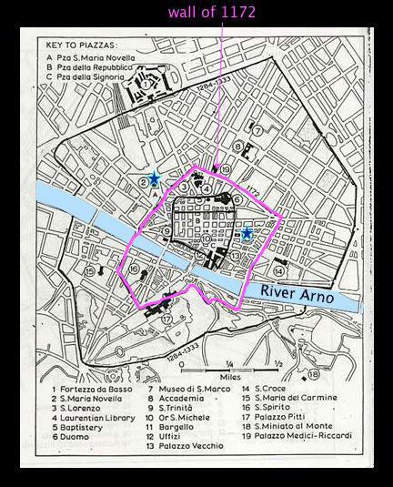
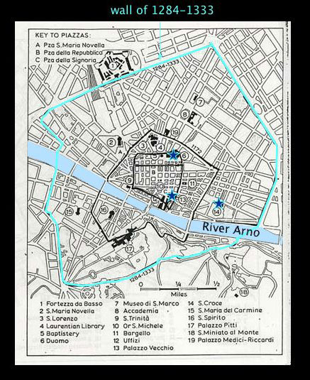
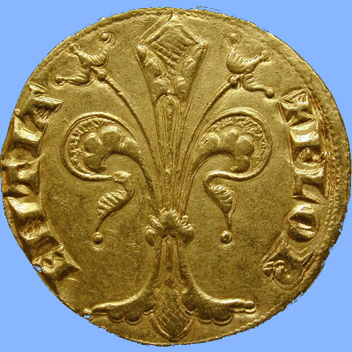
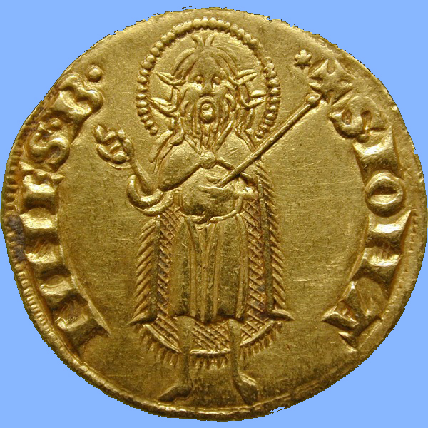
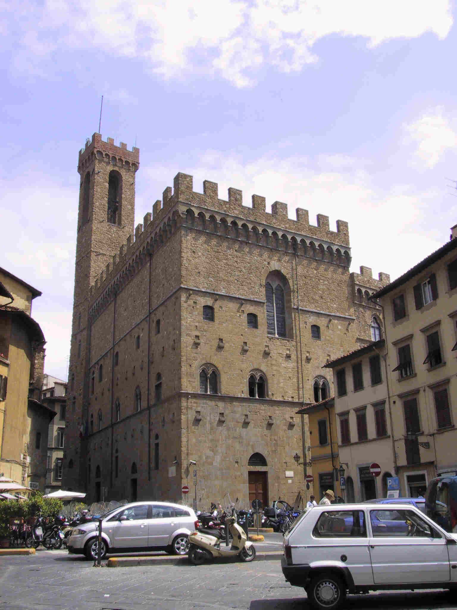
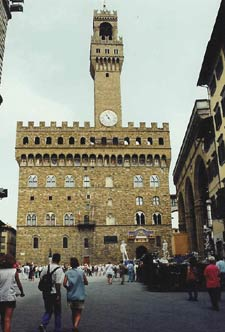

 |
Around 1170, Florence was a
relatively small town of about 30,000
people. By c. 1270, the population had swelled to perhaps 90,000
(or more), a 4-6-fold increase, and Florence had become one of the
largest cities in Europe. (see
population table) Florence was expanding much more rapidly than most other towns in the area. It was filling up with immigrants from the countryside and developing a number of crafts as well as a substantial wool industry. These new arrivals and occupations settled in the area underneath the walls (i.e. just outside the walls). The result was a new wall, built in 1173-75, to contain the population of around 30,000. |
Florence developed rapidly into a mercantile center during the 12th century, with an industrial and a
commercial base. The main industry was cloth. Florence is
located on a large river, the Arno, and thus had lots of water for
cleaning wool, as well as easy sea access to the port of Pisa for trade
throughout the Mediterranean.
The cloth industry was geared
toward export markets. As it grew,
merchants went farther afield in search of wool to import; by 1300 they
were bringing it from as far away as England. In Florence the raw
wool was cleaned, spun, and dyed; an array of different guilds was
responsible for the stages of the process. By the 1350's, silk
manufacture also appeared. The cloth industry gave work to a
third of the population in around 200 workshops.
In addition to the cloth industry (or perhaps to sustain that industry's laborers), Florence had a large number of producers of other things, organized, as elsewhere in Europe, into guilds. We know quite a lot about guilds in Florence because, as we will see below, they were an important part of the government.
The guilds were viewed as divided into two groups, major and minor. The major guilds included:
the judges and notaries
the foreign cloth merchants
the bankers
the wool-producers
the retailers on the leading shopping
street, plus the silk merchants
the physicians and apothecaries
(the latter including dealers in oriental spices)
the furriers
The minor guilds included:
the
butchers
the shoemakers
the blacksmiths
the builders
the
rigattieri
(second hand dealers)
the winesellers
the innkeepers
the sellers of salt, oil, and cheese
the tanners (leathermakers)
the armorers
the ironworkers
the girdlemakers
the woodworkers
the bakers
 |
The ever-increasing prosperity of Florence meant that the population swelled even more; from 30,000 in 1172, it had jumped to almost 100,000 by 1280. In 1284 a much larger new wall was added to the city, finished only in 1333. In fact, the walled-in territory never filled up (due largely to Black Death) until the 19th century. |
The productivity of the wool trade
meant that the city had a lot of
capital available for financing, and investment in international trade. The Florentine gold coin that you see on the right, called the Florin (21 mm diameter, 3.51 g), was first minted in 1252, and maintained its weight and purity of gold until 1523. It became the most widely accepted gold coin in Europe and the Mediterranean. On the obverse it depicts the lily that was the symbol of the city [+FLORENTIA], and on the reverse a picture of John the Baptist, the city's patron saint [+S(anctus) IOHANNES B.].
|
  |
 The Bargello, begun in 1254 to be the residence of the podestà. As you can see, it was a castle-like structure, defensible in case of civic violence |
Florentine politics become very complicated in the thirteenth century. The four city quarters were expanded to
six regions (sestieri), each
providing one consul. The counts faded out of the picture;
eventually, in 1183, Florence was recognized by the emperor as an independent commune. |
In the 1250's, a moment when the guelphs were in power in Florence, a group of the popolo took power, divided the city into 20 neighborhoods, each with a military role; also set up a government of 12 elected members. Interestingly, this government required all towers to be taken down to a fixed height. This government (known as the primo popolo) was kicked out in 1260 when the ghibellines returned to power, but after six years the ghibellines lost again, and a second government emerged, run by the merchants. In 1282 a new government was created. It was headed by the signoria, a group of 6 priors elected for 2 months each. Priors had to be members of a major guild. During their tenure they lived together in a single house with their families, and contact with others was strictly supervised. Initially this government only included members of the major guilds (as listed above). In 1292, the government was extended to the lesser guilds also. Note that it was the masters in these guilds who held power, not the workers or lower-level employees. In 1293 this government passed the Ordinances of Justice, which guaranteed justice for ordinary people against the magnates (grandi); certain magnate families with a reputation for violence and lawlessness were barred in perpetuity from civic office.
|
 The Palazzo del Popolo (now the Palazzo Vecchio), the residence of the priors and their families during their two months of office, begun in 1298. Like the Bargello, this building had the appearance of a fortified castle, in case of civic riots. |
The late thirteenth century saw a building boom in Florence, aimed at housing the people and its government, and also increasing the prestige of the city. The city government was in charge of regulating construction in the city, and there was a deliberate attempt to make the city reflect the aspirations of its people. The bargello and the Palazzo del Popolo certainly represent this. Immediately next to the Palazzo Vecchio, early in the fourteenth century, was created an open area, or piazza, by destroying houses belonging to a leading ghibelline family. To the side of the piazza a special loggia, or covered porch, was added in the mid-fourteenth century as a place for public ceremonies and business.
The Dominicans and Franciscans had
been in Florence for decades, and
each group built a huge new church in the late thirteenth
century. The Dominicans built Santa Maria Novella, begun in 1280;
the Franciscans built Santa Croce, begun in 1296. These churches
were the homes of particular religious orders, but they were considered
public buildings which reflected on the honor and importance of
Florence.
A new cathedral was begun in 1296,
although much of it was not
completed until the 14th century (and the dome dates to the 15th
century). It was purposely meant to be larger than St.
Peter's in Rome. Both the cathedral and the Palazzo
del Popolo were designed by Arnolfo da
Cambio, who was also responsible for the walls. Notice that the
cathedral and the Palazzo Vecchio were on the opposite sides of the old
town from each other, which perhaps indicates a rivalry between the two
sources of authority in the city. However, in the mid-14th
century the street between them was widened, buildings torn down and
rebuilt according to standards that both met fire code and would look
good.